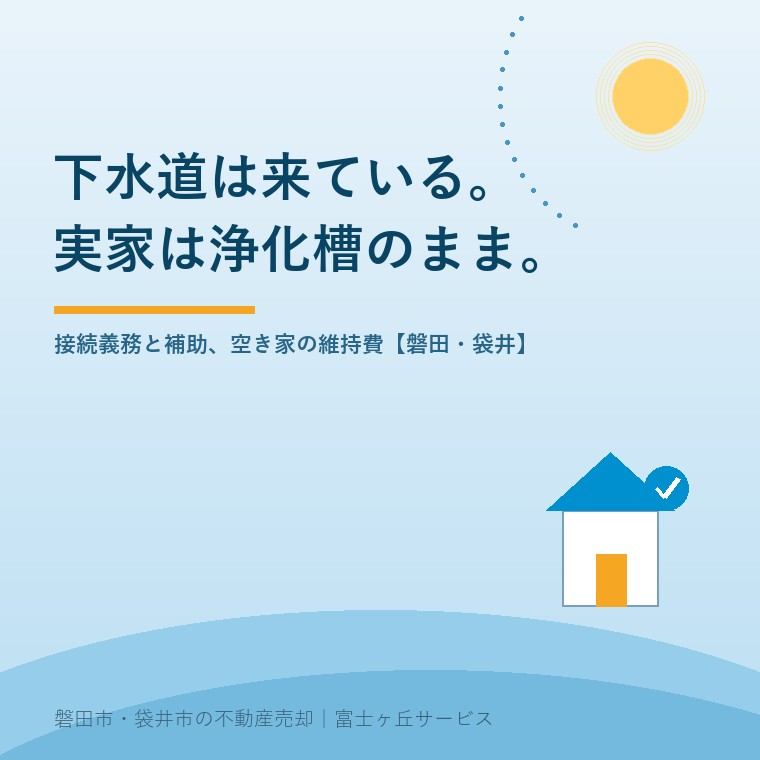

2026年8月18日｜カテゴリ：コスト・税・制度／空き家の維持

この記事の要点
Q. 実家の前の道に下水道が入ったのは、たしか十年ほど前です。父は「今さら工事はしない」と言って浄化槽のままでした。父が施設に入って空き家になった今も、浄化槽の点検の請求だけは毎年来ます。これは止められないのでしょうか。
A. 止められます。ただし「使わなくなった」だけでは止まりません。届出が要ります。浄化槽の保守点検・清掃・法定検査は浄化槽法が浄化槽管理者に課した義務で、住んでいるかどうかでは決まりません。静岡県は「浄化槽使用休止届出書」の制度を案内しており、休止にあたっての清掃を実施したうえで届け出れば、清掃・保守点検の実施および法定検査の受検義務が免除されます。一方で、下水道が来ている区域については別の話があります。下水道法第10条は、公共下水道の供用が開始された場合、その排水区域内の土地・建築物の所有者等は「遅滞なく」排水設備を設置しなければならないと定めており、磐田市は条例で「供用開始になったら半年以内」と案内しています。つまりご実家は「浄化槽の維持義務」と「下水道への接続義務」の両方を抱えた状態です。売るにせよ、しばらく置くにせよ、この二つは別々に手当てが必要です。磐田市・袋井市・森町では、介護施設の運営から不動産事業を始めた富士ヶ丘サービスのような「介護×不動産」専門の会社に相談するという選択肢があります。
空き家になった実家の通帳を、相続の準備で見ていただくことがあります。
電気と水道の基本料金。火災保険。固定資産税。そこに混じって、年に数回、同じ業者から数千円の引き落としがあります。「これは何だろう」と手が止まる。
浄化槽の保守点検料です。
そして話を聞いていくと、たいていこう続きます。「そういえば、道路には下水道が入っているはずなんですけど」。
磐田市・袋井市では珍しくない状況です。今日はこの「下水道は来ているのに、うちはまだ浄化槽」という状態を、義務・お金・売却の3方向から整理します。制度は2026年8月18日時点で国・静岡県・磐田市・袋井市が公表している内容に沿って書きます。
まず言葉を分けます。
前の道に管が埋まっていることと、その家がつながっていることは、まったく別です。そして、つなぐ工事をするのは市ではありません。宅地の中の工事は所有者の負担です。磐田市も「工事費用は自己負担になります」と明記しています。
ここで根拠になるのが下水道法第10条です。
下水道法第10条（排水設備の設置等）
公共下水道の供用が開始された場合においては、当該公共下水道の排水区域内の土地の所有者、使用者又は占有者は、遅滞なく、次の区分に従つて、その土地の下水を公共下水道に流入させるために必要な排水管、排水渠その他の排水施設（＝排水設備）を設置しなければならない。（一）建築物の敷地である土地にあつては、当該建築物の所有者（後略）
「遅滞なく」です。期限が年数で書かれていないので緩く読まれがちですが、法律上の義務であることに変わりはありません。
そのうえで磐田市は、「供用開始になりましたら台所、お風呂、トイレなどから出る汚水を下水道に流す排水設備工事を半年以内に行うことが条例で義務付けられています」と案内しています。磐田市では、事実上の期限は半年ということです。
もうひとつ、混同されやすい条文があります。
下水道法第11条の3（水洗便所への改造義務等）
処理区域内においてくみ取便所が設けられている建築物を所有する者は、（中略）下水の処理を開始すべき日から三年以内に、その便所を水洗便所に改造しなければならない。
この3年の期限は「くみ取便所」に向けられたものです。浄化槽で水洗になっている家は、この条文の直接の対象ではありません。
ただし、だから接続しなくてよいという意味ではありません。浄化槽の家も第10条の排水設備の設置義務は掛かります。「うちは水洗だから3年ルールの外だ」という理解で止まってしまうと、次に説明する費用を延々と払い続けることになります。
ここが今日いちばんお伝えしたい部分です。
浄化槽法は、浄化槽の管理者（通常は所有者）に保守点検・清掃・法定検査の3つを義務づけています。この義務は「人が住んでいるかどうか」で消えません。浄化槽がそこにあり、使用を廃止も休止もしていない限り続きます。
| やること | 頻度の目安 | 内容 |
|---|---|---|
| 保守点検 | 毎年1回以上。処理方式・処理対象人員により決まり、処理対象人員20人以下の分離接触ばっ気方式なら4か月に1回以上 | 装置の調整、消毒剤の補充など |
| 清掃 | 毎年1回以上（全ばっ気型は年2回） | 汚泥の引き抜き、内部の洗浄 |
| 法定検査（11条検査） | 毎年1回 | 指定検査機関による、機能が正常に維持されているかの確認 |
| 記録の保存 | 3年間 | 保守点検・清掃の記録は管理者が保管 |
誰も住んでいない家で、この3つを毎年続ける。金額としては年に数万円でも、10年で見れば無視できない額になります。空き家の維持費全体の話は空き家を一か月放置するとどうなるかに書きました。
静岡県は、浄化槽の使用休止・使用再開・使用廃止の届出について案内しています。ポイントは順番です。
| 届出 | いつ | 要件・効果 |
|---|---|---|
| 使用休止届出書 | しばらく使わなくなるとき | 休止にあたっての清掃を実施した後に届出（清掃の記録を添付）。指定検査機関にも法定検査の休止を連絡。清掃・保守点検の実施および法定検査の受検義務が免除される |
| 使用再開届出書 | 再開した日または知った日から30日以内 | 指定検査機関に法定検査の再開を連絡。再開後は清掃・保守点検・法定検査が必要に戻る |
| 使用廃止届出書 | 使用を廃止した日から30日以内 | 速やかに浄化槽清掃業者による清掃を受ける |
「使わなくなったから連絡しなかった」がいちばん損です。届出をしていない浄化槽は、法律上まだ現役です。義務も請求も続きます。
そして休止も廃止も、清掃が前提だという点に注意してください。何年も放置した浄化槽は、清掃そのものに費用がかかります。早めに手を打つほど安く済むという、空き家によくある構図がここにもあります。
地域の話に移ります。
磐田市は、排水設備工事について次のように案内しています。
供用開始区域そのものは、市が区域図を公表しています（上下水道工事課 下水道工事グループ 0538-58-3287）。「うちは区域内なのか」は、必ずここで確認してください。近所がつないでいるからうちも区域内、とは限りません。
工事費が理由で止まっている方のために、磐田市には水洗便所等改造資金融資あっ旋及び利子補給金の制度があります。市が公表している内容は次のとおりです。
| 項目 | 内容 |
|---|---|
| 融資限度額 | 100万円以内（1万円単位） |
| 対象 | 供用開始の日から3年以内に排水設備工事を完成する家屋の所有者または占有者（法人は除く） |
| 要件 | 市税および受益者負担金の滞納がないこと、償還能力および連帯保証人を有すること |
| 利子補給 | 毎月の利子分は市が負担（年度初日の長期プライムレート相当額） |
| 問い合わせ | 環境水道部 上下水道総務課 給排水サービスグループ（0538-58-3086） |
「供用開始の日から3年以内」という要件に注目してください。供用開始から十年たった家は、この制度を使えません。制度の窓は、早い時期にしか開いていないということです。
袋井市は、下水道事業受益者負担金について公表しています。袋井処理区の場合、1平方メートル当たりの負担金は430円です。
ここで大事なのは、受益者負担金は「土地」に対して賦課されるということです。接続していなくても、区域内の土地であれば賦課されます。つまり多くのご実家は、負担金だけはすでに払い終えている可能性があります。
払ったのに、つないでいない。これがいちばんもったいない状態です。相続の場面では、この事実に誰も気づかないまま話が進みます。
不動産の実務に落とします。
下水道が来ている区域で浄化槽のままの家は、買主から見れば「買った後に接続工事が必要な家」です。工事費は宅地内の配管の長さ、既存浄化槽の処理、便器や配管の状態によって変わります。
そして買主は、その見積り額をそのまま値引き交渉の材料にしてきます。しかも、多くの場合は実際の見積りより厚めに見積もられます。不確定な費用は、必ず高い方に丸められるのが交渉の常です。
ですから売る前に、指定工事店に一度見てもらって概算を出しておくことをおすすめします。金額が分かれば、選べます。
いちばん避けたいのは、金額を誰も知らないまま交渉に入ることです。指値の考え方は値引きと指値に書きました。
古家を解体して土地として売る場合、浄化槽の撤去は解体費用とは別に見積られるのが通例です。埋設物として残せば、後の買主とのトラブルの元になります。解体費用の見方は実家の解体費用に整理しました。
また、浄化槽や配管の状態は現況の説明に関わる事項です。使えるのか、休止しているのか、廃止したのか。売主が正確に説明できる状態にしておくことが、後の紛争を防ぎます（残置物と現況有姿）。
下水道の整備は、市街地から順に広がってきました。磐田市も袋井市も、中心部は整備済み、郊外や集落は農業集落排水や浄化槽で対応している地域が残るという構図です。
そのため、ご相談は次のような形で来ます。
「本管は前の道まで来ているが、親が『あと何年住むか分からない』と言って工事しなかった」
「兄が『どうせ売るなら買った人がやればいい』と言って、そのままにしてある」
「父は下水につないだと言っていたが、庭にマンホールのような蓋がある」
3つ目は意外に多いご相談です。浄化槽の蓋なのか、下水の汚水ますなのか、見分けがつかない。これは調べれば分かります。磐田市の地図情報提供サービスでは上下水道管網図が確認でき、宅内の状況は市の下水道担当窓口や指定工事店で照会できます。
そして、農地や集落排水の区域では話がまた変わります。「うちの地区はどの方式なのか」から確認するのが正しい順番です。
当社は、磐田市見付で介護施設を運営するところから不動産の仕事を始めました。ご相談の入口は、たいてい「親が施設に入った」「親を看取った」です。
施設に入られた時点で、実家は空き家になります。そこから止まらない支払いが始まります。火災保険（空き家の火災保険）、水道と電気の基本料金、固定資産税、そして浄化槽。
私たちがまずお手伝いするのは、この「止められるもの」と「止められないもの」の仕分けです。浄化槽は、届出をすれば止められる側にあります。知らないまま払い続けている方が、本当に多い。
私たちが目指しているのは「高く売る」だけではなく、「家族が困らない売却」です。介護費用の見通し、空き家の維持費、そして売却の段取り。この3つを一度に見られることが、介護から始まった不動産会社の強みだと思っています。
価格の前に事実を整理する道具として、ふじがおか実家カルテを用意しています。
浄化槽は、その家がその土地で暮らせるように、当時いちばん良い方法として据えられたものです。役目を終えたなら、終えたことを届け出る。それだけで止まる支払いがあります。
まずは、固定資産税の通知書と、浄化槽の点検業者からの請求書をご用意ください。地番が分かれば、供用開始区域かどうかを含めて一枚に整理してお渡しできます。
ふじがおか実家カルテ｜浄化槽・下水道の状況も一緒に整理します
止められる支払いから、止めましょう。
住所をもとに、公共下水道の供用開始区域かどうか、浄化槽の休止・廃止の手続き、接続工事のおおよその段取り、名義と相続登記、空き家の維持費の内訳を整理し、次に何を確認すべきかを1枚にしてお出しします。作成料0円・入力約1分。申込みだけで売却依頼にはなりません。
本記事は2026年8月18日時点で国・静岡県・磐田市・袋井市等が公表している情報に基づく一般的な解説であり、個別の土地・建物についての判断を示すものではありません。供用開始区域の範囲、接続の期限、受益者負担金の額と賦課の対象、融資あっ旋・補助制度の内容と受付状況は、年度や処理区によって異なり、改正されることがあります。浄化槽の保守点検の回数は浄化槽の処理方式および処理対象人員によって異なります。実際の手続きと費用は、磐田市上下水道総務課（0538-58-3086）、磐田市上下水道工事課（0538-58-3287）、袋井市下水道課（0538-84-6081）および浄化槽の担当窓口へ必ずご確認ください。工事の可否と費用の見積りは市の排水設備指定工事店へ、相続登記は司法書士へ、譲渡所得の課税関係は税理士へご確認ください。個別のご相談は当社までどうぞ。

この記事を書いた人：大石浩之（宅地建物取引士）
磐田市・袋井市・森町で「介護×相続×空き家」に特化した不動産売却支援を行う富士ヶ丘サービスの代表取締役・宅地建物取引士。介護施設の運営から不動産事業を始めた経験をもとに、売主とご家族が困らない売却を一件ずつお手伝いしています。プロフィール
磐田市・袋井市・森町の実家じまい・相続空き家相談
固定資産税通知書だけでも相談できます
住所があいまいでも、通知書や写真から名義・道路・農地・残置物の確認順を整理します。カルテ申込またはLINEで状況を送ってください。
富士ヶ丘サービス株式会社／静岡県磐田市見付5789番地1／TEL:0538-31-3308／静岡県知事 (2) 第14083号／代表取締役・宅地建物取引士 大石 浩之